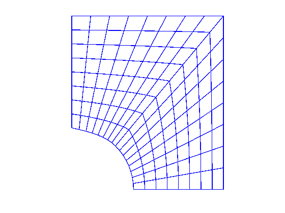
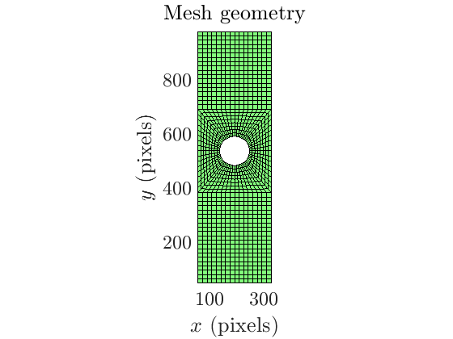

Contents
clc ; clear; close all;
Dr. Siva Srinivas Kolukula's code
L = 350-20 - (40+20) ;
B = 350-20 - (0+20) ;
m = 9 ;
n = 9 ;
global R theta;
R = 55 ;
theta = pi/2 ;
global O P1 P2 P3 P4 P5 CMP ;
O = [0,0] ;
P1 = O + [R 0.] ;
P2 = O + [L/2 0.] ;
P3 = O + [L/2 B/2] ;
P4 = O + [0. B/2] ;
P5 = O + [0. R] ;
CMP = [R*cos(theta/2.) R*sin(theta/2.)] ;
xi = linspace(0.,1,m) ;
eta = linspace(0.,1.,n) ;
Domain = 2 ;
DX = cell(1,Domain) ;
DY = cell(1,Domain) ;
for d = 1:Domain
X = zeros(m,n) ;
Y = zeros(m,n) ;
for i = 1:m
Xi = xi(i) ;
for j = 1:n
Eta = eta(j) ;
XY = (1-Eta)*Xb(Xi,d)+Eta*Xt(Xi,d)+(1-Xi)*Xl(Eta,d)+Xi*Xr(Eta,d)...
-(Xi*Eta*Xt(1,d)+Xi*(1-Eta)*Xb(1,d)+Eta*(1-Xi)*Xt(0,d)+(1-Xi)*(1-Eta)*Xb(0,d)) ;
X(i,j) = XY(1) ;
Y(i,j) = XY(2) ;
end
end
DX{d} = X ;
DY{d} = Y ;
end
X1 = DX{1} ; Y1 = DY{1} ;
X2 = DX{2} ; Y2 = DY{2} ;
X = [X1 ;X2(m-1:-1:1,:)] ;
Y = [Y1 ;Y2(m-1:-1:1,:)] ;
figure(1)
plotgrid(X,Y) ;
vec = [1 1 ; -1 1 ; -1 -1 ; 1 -1] ;
figure(2)
for quadrant = 1:4
plotgrid(vec(quadrant,1)*X,vec(quadrant,2)*Y) ;
hold on
end
axis on;

Generate finite element mesh nodal coordinates and Q4 elements
O2 = [193, 543];
coord_x_1 = X + O2(1);
coord_y_1 = Y + O2(2);
M = size(coord_x_1,1); N = size(coord_x_1,2);
elementsFEM1 = zeros((M-1)*(N-1),4);
for j = 1:N-1
for i = 1:M-1
elementsFEM1((j-1)*(M-1)+i ,:) = [(j-1)*(M)+i (j-1)*(M)+i+1 j*(M)+i+1 j*(M)+i];
end
end
coord_x_2 = -X + O2(1);
coord_y_2 = Y + O2(2);
elementsFEM2 = zeros((M-1)*(N-1),4);
for j = 1:N-1
for i = 1:M-1
elementsFEM2((j-1)*(M-1)+i ,:) = M*N + [(j-1)*(M)+i (j-1)*(M)+i+1 j*(M)+i+1 j*(M)+i];
end
end
coord_x_3 = -X + O2(1);
coord_y_3 = -Y + O2(2);
elementsFEM3 = zeros((M-1)*(N-1),4);
for j = 1:N-1
for i = 1:M-1
elementsFEM3((j-1)*(M-1)+i ,:) = 2*M*N + [(j-1)*(M)+i (j-1)*(M)+i+1 j*(M)+i+1 j*(M)+i];
end
end
coord_x_4 = X + O2(1);
coord_y_4 = -Y + O2(2);
elementsFEM4 = zeros((M-1)*(N-1),4);
for j = 1:N-1
for i = 1:M-1
elementsFEM4((j-1)*(M-1)+i ,:) = 3*M*N + [(j-1)*(M)+i (j-1)*(M)+i+1 j*(M)+i+1 j*(M)+i];
end
end
coordinatesFEM = [coord_x_1(:) coord_y_1(:); coord_x_2(:) coord_y_2(:);
coord_x_3(:) coord_y_3(:); coord_x_4(:) coord_y_4(:) ];
elementsFEM = [elementsFEM1; elementsFEM2; elementsFEM3; elementsFEM4];
MeshSkeleton = ones(size(coordinatesFEM,1),1);
PlotMesh_show(MeshSkeleton, coordinatesFEM, elementsFEM);
%%%%% Add more elements at the top and the bottom %%%%%
[row1,col1] = find( coordinatesFEM(:,1)>0 );
x_min = min(coordinatesFEM(row1,1));
x_max = max(coordinatesFEM(row1,1));
y_min = min(coordinatesFEM(row1,2));
y_max = max(coordinatesFEM(row1,2));
[row2,col2] = find(coordinatesFEM(:,2) == y_min);
[row3,col3] = find(coordinatesFEM(:,2) == y_max);
xList = unique(coordinatesFEM(row2,1));
yList1 = flipud([y_min:-16:40]');
yList2 = [y_max:16:1040-40]';
[xGrid1,yGrid1] = ndgrid(xList,yList1);
[xGrid2,yGrid2] = ndgrid(xList,yList2);
DICpara.winstepsize = 16;
DICpara.ImgSize = [400,1040];
DICmesh1 = MeshSetUp(xGrid1,yGrid1,DICpara);
DICmesh2 = MeshSetUp(xGrid2,yGrid2,DICpara);
sizeCoordFEM1 = size(coordinatesFEM,1);
sizeCoordFEM2 = size(DICmesh1.coordinatesFEM,1);
coordinatesFEM = [coordinatesFEM;
DICmesh1.coordinatesFEM;
DICmesh2.coordinatesFEM];
elementsFEM = [elementsFEM;
sizeCoordFEM1 + DICmesh1.elementsFEM;
sizeCoordFEM1 + sizeCoordFEM2 + DICmesh2.elementsFEM];
for tempi = 2:size(coordinatesFEM,1)
if coordinatesFEM(tempi,1)>0
[min1,ind1] = min ( sum( abs( ones(tempi-1,1)*coordinatesFEM(tempi,:) - coordinatesFEM(1:tempi-1,:) ) , 2) );
if min1 < 1e-9
coordinatesFEM(tempi,:) = 0*coordinatesFEM(tempi,:);
[row1,col1] = find(elementsFEM == tempi);
for tempj = 1:length(row1)
elementsFEM(row1(tempj),col1(tempj)) = ind1;
end
end
end
end
for tempi = 1:size(elementsFEM,1)
tempxy_center = mean(coordinatesFEM(elementsFEM(tempi,:),:));
tempxy = coordinatesFEM(elementsFEM(tempi,:),:) - ones(4,1)*tempxy_center;
temptheta = atan2( tempxy(:,2), tempxy(:,1) );
temptheta(temptheta<0) = temptheta(temptheta<0) + 2*pi;
[~,temptheta_ind] = sort(temptheta);
elementsFEM(tempi,:) = elementsFEM(tempi,temptheta_ind);
end
MeshSkeleton = ones(size( coordinatesFEM,1),1);
PlotMesh_show(MeshSkeleton, coordinatesFEM, elementsFEM);
save('plate_hole.mat','coordinatesFEM','elementsFEM');
